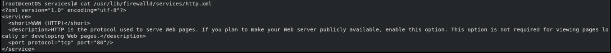

services
They are a:
• list of ports and destinations
• list of firewall helper modules automatically loaded for the service
if we want to see all the services that aare available:
firewall-cmd --get-services
oppure
ls /usr/lib/firewalld/services
example of service:
 in this httpd.xml file we see that if a zone call this service and permits this service in the zone than this port will opened in the firewall